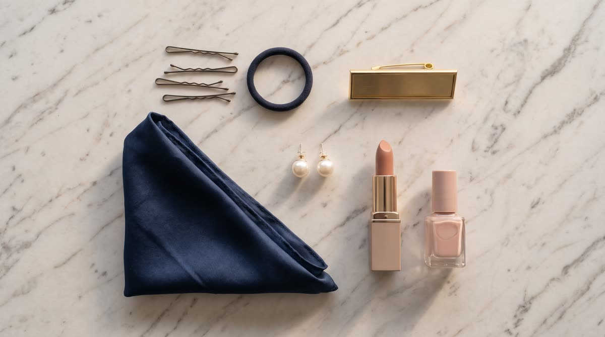

El estándar
Natural, pero completo. Si dudas de algo, elige lo más sobrio.
Cabello recogidoMoño o trenza, pulido y sin mechones sueltos. Ganchos y ligas discretos.No va: pelo suelto, aunque esté peinado.
Maquillaje completo y naturalPiel uniforme, cejas definidas y labios. Se retoca a mediodía.No va: sin maquillaje o maquillaje de noche.
Uñas impecablesLimpias, de largo corto o medio, en tono nude o claro y sin despostillar.No va: colores intensos, diseños o uñas largas.
Uniforme completoLimpio, planchado y de tu talla, con los zapatos limpios. Si una prenda está gastada, se pide cambio.No va: prendas arrugadas, manchadas o de otro color.
Gafete visibleSiempre a la vista sobre el uniforme, para que la paciente sepa con quién habla.No va: gafete guardado, volteado o tapado.
Accesorios mínimosAretes pequeños, un solo anillo y un reloj discreto.No va: nada que cuelgue ni que suene.
Aliento y perfumeAliento fresco y un perfume suave, o ninguno: hay pacientes sensibles a los olores.No va: perfume intenso.
El celular, fuera de la vistaEn silencio y guardado. La paciente nunca debe verte con el celular en la mano.No va: celular sobre el counter o en la mano.
A la vista de la paciente
La presentación también es conducta. Vale para todo el personal, no solo para el counter.
- En el counter y en las zonas que ve la paciente no se come ni se toma nada.
- Nadie se recuesta ni descansa en camillas o sillones a la vista. Los descansos, fuera de su vista.
- Sentada en el counter: postura erguida, de frente a la paciente, y la mirada en ella, no en la pantalla.
- Cuando llega una paciente, te pones de pie, la saludas por su nombre y le ofreces algo de tomar.
- Todo se entrega con las dos manos, girado hacia ella: la tablet, el documento, la tarjeta.
- Quien paga tiene toda tu atención.
Check frente al espejo, antes de las 8:00
Treinta segundos. El Admin hace el mismo check en la Academia y suma al puntaje de Recepcionista del mes.
Academia de Recepción · estándar de hotelería de lujo